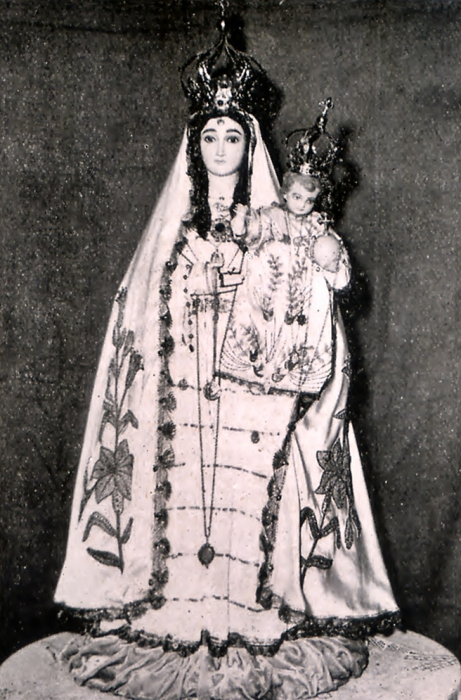

O Convento da Penha foi tombado pelo Iphan (Instituto do Patrimônio Histórico e Artístico Nacional) em 1943. O crescimento das romarias é evidente, com a Romaria das Mulheres, por exemplo, tendo início em 1970. A tradição de erguer o terço gigante no Campinho existe desde 1998. A Festa da Penha é um evento de profunda importância histórica, cultural e religiosa, que atrai milhões de fiéis e turistas. Seu reconhecimento como patrimônio imaterial e a busca por um status nacional reforçam sua relevância contínua para a identidade capixaba e brasileira.
A História da Festa da Penha: Quatro Séculos de Fé e Tradição
A Festa de Nossa Senhora da Penha teve sua primeira celebração em 30 de abril de 1570, uma segunda-feira de Páscoa, por iniciativa de Frei Pedro Palácios. Embora outra fonte mencione 1571 , a data de 1570 é mais consistentemente ligada ao falecimento de Palácios dois dias depois. A primeira romaria ao topo do Morro da Penha foi registrada em 1573, realizada pelos jesuítas Luís de Grã e Inácio de Tolosa em agradecimento por terem sobrevivido a um naufrágio.
A administração da capela de Nossa Senhora da Penha foi entregue aos religiosos franciscanos em 1590, e o Morro da Penha foi formalmente doado a eles em 1591. A Festa da Penha foi oficialmente reconhecida pelo Governo Provincial em 1844, quando a Lei nº 7 declarou a data do evento como feriado para todos os órgãos públicos pela Assembleia Provincial. A trajetória da Festa da Penha, que se inicia com a iniciativa individual de Frei Pedro Palácios em 1570 e culmina com seu reconhecimento oficial como feriado provincial em 1844, demonstra um processo orgânico de institucionalização da fé. Essa evolução de uma celebração devocional local para um evento com status legal e social formalizado reflete a crescente influência e a aceitação generalizada da devoção mariana na sociedade capixaba, transformando a fé individual em um pilar da identidade coletiva e do calendário cívico. O crescimento da Festa da Penha em escala e importância é notável, tornando-se a maior manifestação religiosa do Espírito Santo e a terceira maior mariana do Brasil.
A história do Convento da Penha, intrinsecamente ligada à Festa, também é marcada por marcos significativos. A pedra fundamental para a construção do Convento foi lançada em 1652, e as obras foram concluídas em 1660. O Convento foi saqueado pelos holandeses em 1653, um evento que, segundo a lenda, foi repelido por soldados celestiais. O edifício passou por expansões em 1750 e diversas restaurações ao longo dos séculos, incluindo uma significativa em 1945 por André Carloni.
A localização elevada do Convento da Penha, a 145 metros acima do nível do mar , conferia-lhe não apenas uma posição de destaque espiritual, mas também uma vantagem estratégica. A menção de Anchieta sobre a ermida ser um "grande refrigério e devoção dos navegantes" e os relatos de tentativas de assalto por piratas ingleses (1592) e holandeses (1653), com lendas de defesa divina , sugerem que o Convento servia como um ponto de referência e, possivelmente, de vigia ou defesa para a costa. Essa dualidade de propósito – espiritual e tático – contribuiu para sua proeminência e preservação nos primeiros séculos da colonização.
Eventos notáveis incluem o ano de 1769, quando a imagem de Nossa Senhora da Penha foi levada em procissão marítima a Vitória durante uma grande seca, resultando no "Milagre da Chuva". O imperador D. Pedro II visitou o Convento em 1860, registrando meticulosamente suas observações e doando fundos. A presença e o apoio de figuras como D. Pedro I (com doações) e D. Pedro II (com sua visita e doações), juntamente com a concessão de indulgências papais por Leão XIII em 1881 e a declaração de Nossa Senhora da Penha como Padroeira da Diocese em 1912 , demonstram a importância do endosso de autoridades civis e eclesiásticas de alto escalão. Esse apoio legitimou e impulsionou a Festa, conferindo-lhe maior prestígio e alcance, e consolidando sua posição como um dos principais centros de devoção mariana no Brasil.
O Convento da Penha foi tombado pelo Iphan (Instituto do Patrimônio Histórico e Artístico Nacional) em 1943. O crescimento das romarias é evidente, com a Romaria das Mulheres, por exemplo, tendo início em 1970. A tradição de erguer o terço gigante no Campinho existe desde 1998. A Festa da Penha é um evento de profunda importância histórica, cultural e religiosa, que atrai milhões de fiéis e turistas. Seu reconhecimento como patrimônio imaterial e a busca por um status nacional reforçam sua relevância contínua para a identidade capixaba e brasileira.